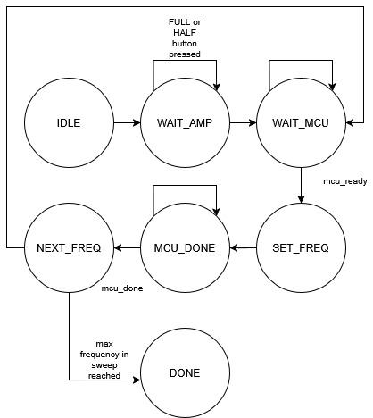
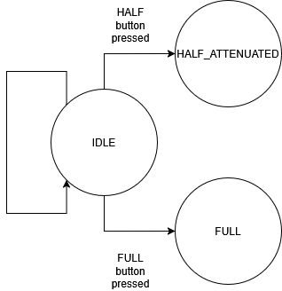
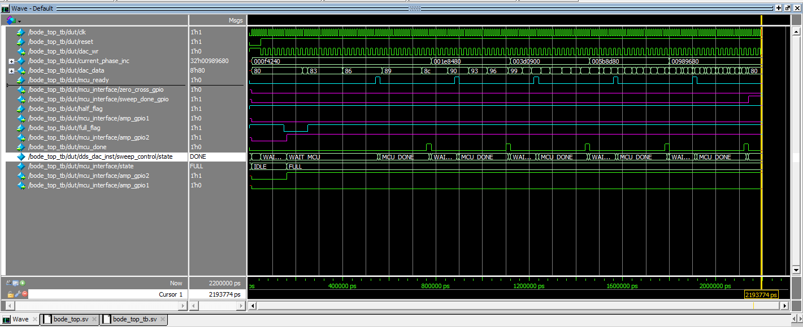
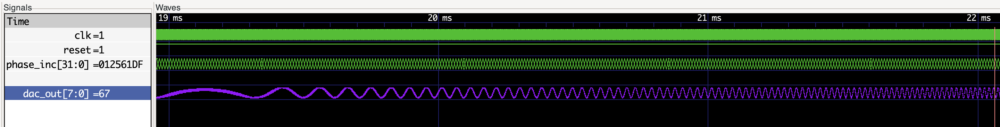
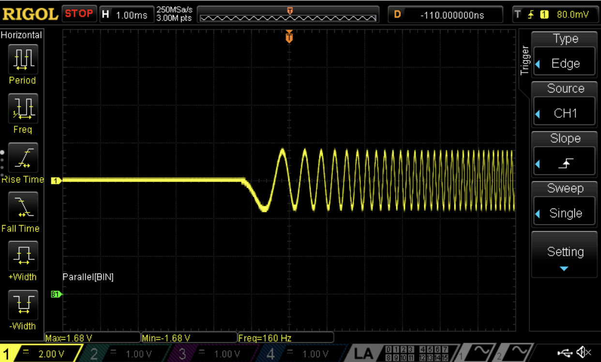
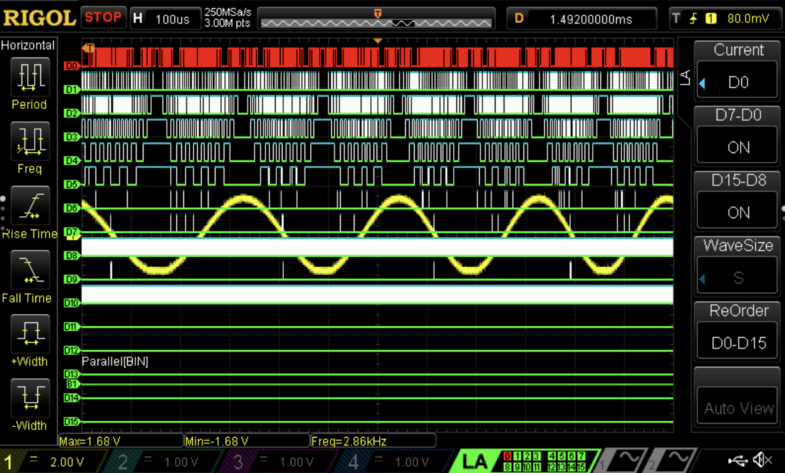

FPGA
Introduction
The iCE40 FPGA generates a sine wave using an internally implemented Direct Digital Synthesizer (DDS). As a part of the DDS implementation, the FPGA stores a quarter-wave sine table in non volatile Flash Read Only Memory (ROM), which is a new feature we used for our FPGA. The DDS generates sine waves at various frequencies to preform a frequency sweep from (100 Hz to 100 kHz), which will then drive a DAC to make an analog signal.
The Flash ROM was used as a way to store a sine wave LUT in non-volatile storage with immediate access. This feature goes beyond the previous material covered in the course because in the past we were concerned about optimizing a design for space by minimizing the number of LUT’s used. Thus, using the Flash ROM feature addresses this concern in a new way because it avoids storing data through the use of LUT’s. Ultimately, by using Flash ROM, we were able to keep a super light weight design by using only 5 % of the onboard LUT’s.
Design and Testing Methodology
Design Methodology
The FPGA is responsible for creating a frequency sweep that drives an external parallel 8-bit DAC. To do this, the FPGA generates a frequency sweep using a DDS. More specifically, we opted for a quarter-wave DDS, which only requires a fourth of a full sine wave table, in order to save on memory. This table was stored on the FPGA using its Flash ROM.
The sweep control FSM (see figure 1) on the FPGA is responsible for generating a frequency sweep for our desired range (100 Hz to 100 kHz). The MCU controls this FSM by sending various flags to the FPGA, which lets it know when it should start a new process. To illustrate, the MCU lets the FPGA know when it’s ready to collect data for the current frequency and when its done collecting data, which serves as a flag for the FPGA to know when to start generating a wave at a specific frequency, and when to move on to the next wave.

The second FSM present in the bode interface module is responsible for sending important information to the MCU via flags. The FPGA notifies the MCU when there is a zero crossing on its end, which amplitude attenuation mode it’s in, and when it is done sweeping frequencies.

The source code for the FPGA can be found here.
Testing Methodology
Testing for the FPGA was done by doing simulations for each individual submodule. Then, a testbench was created for the top module, which ensured that all modules interacted together accurately. Then, we verified that the design was actually behaving as we expected in physical hardware. Once we set up the interface with the external DAC, we watched the signal on an osccilloscope and made sure the sine waves were being generated at the correct frequency.
Pinout
| FPGA | Label |
|---|---|
| P19 | MCO (clk) |
| P20 | FULL_WAVE_OUT |
| P11 | MCU_READY |
| P10 | SWEEP_DONE |
| P12 | HALF_WAVE_OUT |
| P18 | INIT_BODE |
| P27 | ZERO_CROSS |
| P13 | MCU_DONE |
| P9 | System Reset |
| P3 | DAC_DATA0 |
| P45 | DAC_DATA1 |
| P46 | DAC_DATA2 |
| P6 | DAC_DATA3 |
| P4 | DAC_DATA4 |
| P48 | DAC_DATA5 |
| P47 | DAC_DATA6 |
| P2 | DAC_DATA7 |
| P44 | DAC_WR |
Results and Discussion
Test Bench Simulation


The design met the intended design objectives. Figure 3 shows that the FPGA is able to generate input data for the DAC and communicate with the MCU via the exchange of various flags. Figure 4, shows that the FPGA can generate a frequency sweep of sine waves. Here, the digital signal output from the DDS visualized as an analog signal.
Simulation / waveform images of our testbenches passing can be found here.
Hardware
To test this design with hardware we used a logic analyzer and an oscillscope. Using these instruments allowed us to verify that flags from the FPGA were being raised at the right time. It also allowed us to verify that the sine waves being generated had the correct frequency. In Figure 6, we can see the digital signals (D0 - D7) that were driving the DAC. Additionally, D9 shows the FPGA tracking falling edge zero crossings. This flag is being sent to the MCU to let it know when it sees zero crossing on its end.


Conclusion
This design sucessfully implemented a quarter-wave DDS, which creates sine waves at multiple frequencies that will drive an external DAC. It also used handsahke logic via flags to communicate with the MCU to ensure that state transitions were timed accordingly. As apart of its communication with the MCU, the FPGA sent flags to let the MCU know when a zero crossing was detected, what amplitdue state it was in, and when the frequency sweep was done.